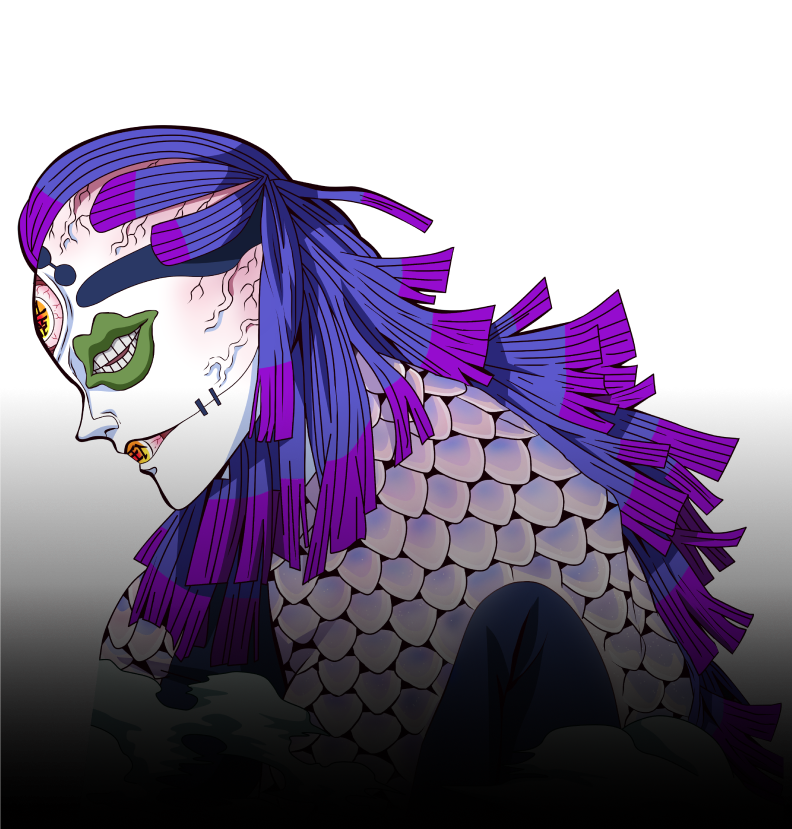
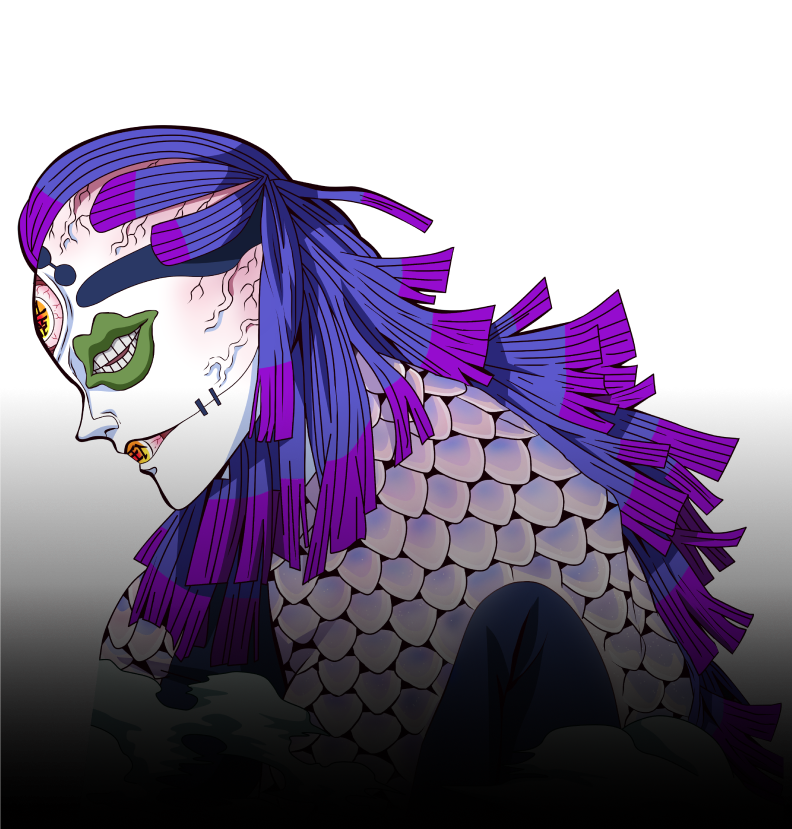

Gyokko, along with Hantengu, are the primary antagonists in the Swordsmith Village Arc of Demon Slayer: Kimetsu no Yaiba. He is a demon affiliated with the Twelve Kizuki, holding the position of Upper Rank Five.
Before becoming a demon, he was a human male named Managi.
 
